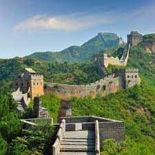

The Great Wall of China (traditional Chinese: 萬里長城; simplified Chinese: 万里长城; pinyin: Wànlǐ Chángchéng, literally "ten thousand li long wall") is a series of fortifications that were built across the historical northern borders of ancient Chinese states and Imperial China as protection against various nomadic groups from the Eurasian Steppe. Several walls were built from as early as the 7th century BC,[4] with selective stretches later joined by Qin Shi Huang (220–206 BC), the first emperor of China. Little of the Qin wall remains.[5] Later on, many successive dynasties built and maintained multiple stretches of border walls. The best-known sections of the wall were built by the Ming dynasty (1368–1644).

Before the use of bricks, the Great Wall was mainly built from rammed earth, stones, and wood. During the Ming, however, bricks were heavily used in many areas of the wall, as were materials such as tiles, lime, and stone. The size and weight of the bricks made them easier to work with than earth and stone, so construction quickened. Additionally, bricks could bear more weight and endure better than rammed earth. Stone can hold under its own weight better than brick, but is more difficult to use. Consequently, stones cut into rectangular shapes were used for the foundation, inner and outer brims, and gateways of the wall. Battlements line the uppermost portion of the vast majority of the wall, with defensive gaps a little over 30 cm (12 in) tall, and about 23 cm (9.1 in) wide. From the parapets, guards could survey the surrounding land.